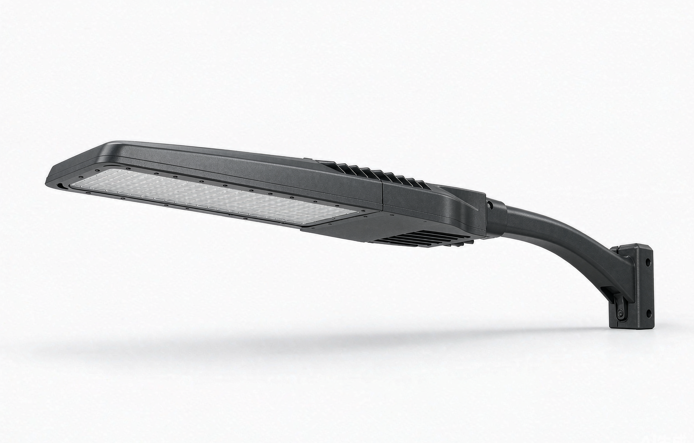
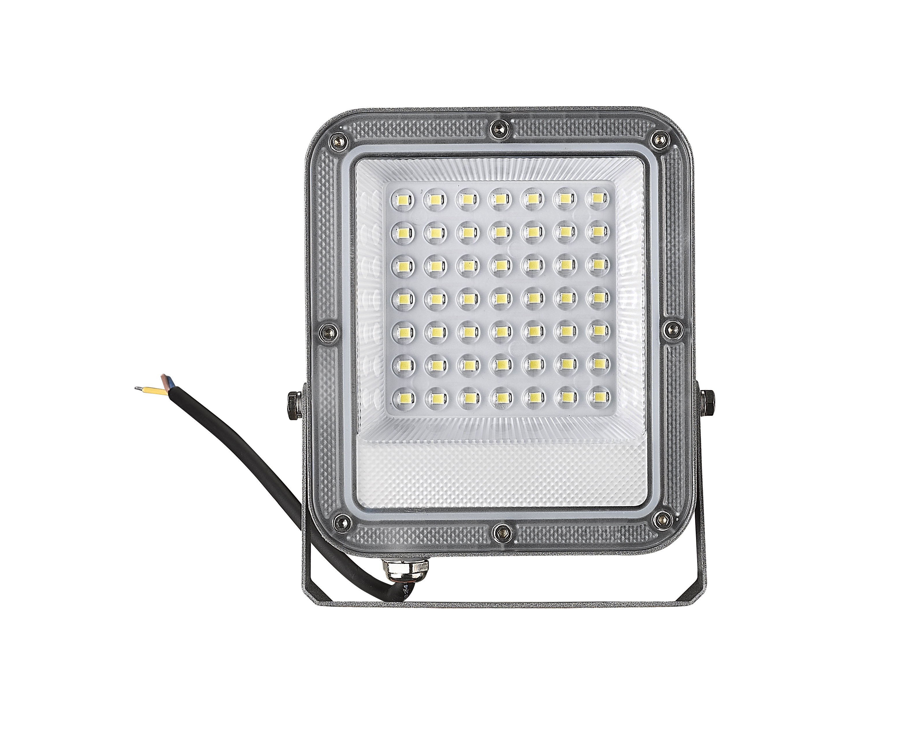
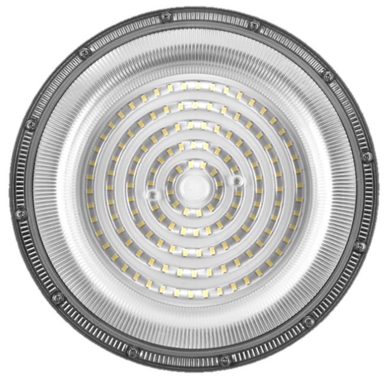

Surface-mount tube batten in 20 W and 36 W on our high-integration driver platform. Fewer parts, lower BOM, and full protection — supplied as CKD kits for local assembly.
| Parameter | Batten Drive 20W | Batten Drive 36W |
|---|---|---|
| Output | 90 V / 200 mA | 90 V / 370 mA |
| Input voltage | 90 – 440 Vac | 90 – 440 Vac |
| Surge capability | 4 kV | 4 kV |
| Efficiency @ 230 Vac | ≥ 89 % | ≥ 91 % |
| Power factor | 0.98 | 0.98 |
| Integration | No VCC cap · no COMP cap · no FB resistor | |
| Protection | Open / short / over-temperature regulation / current dropping | |
| Supply model | CKD kits / finished battens |
Stock both, but lead with 4 ft. It is the replacement size for the fluorescent battens already installed across the region, so it moves on compatibility rather than on being sold. 2 ft is the fitting for corridors, stairwells and small rooms where a 4 ft tube simply does not fit. It is a smaller volume but a very stable one.
Driver overhead is roughly fixed while output scales with wattage, so the same board carries a larger share of its own consumption on the smaller lamp: ≥ 89 % at 20 W against ≥ 91 % at 36 W. It is worth knowing when you quote on running cost, because the 20 W unit is not simply two-thirds of the 36 W in efficiency terms.
It means three fewer components per driver, and those three are among the ones that drift with heat and age. Fewer parts means a shorter assembly step, a lower BOM, and fewer field returns that trace back to a capacitor drying out.
That is what the 90–440 Vac range is for: sag at the end of a feeder, night-time overvoltage, and the dip when a large load starts nearby. Input is protected to 4 kV line-to-line, in line with the rest of the platform. If your grid regularly goes below 90 V or above 440 V, that is a different problem and worth telling us about.
You do, as the locally registered applicant for BIS, SIRIM, TISI or SNI. We hand over the test data, BOM and technical file your lab needs, and answer their questions during review.
Yes. The tube and the driver are separate assemblies inside the housing, so a failure is a board or tube swap rather than a whole-fitting replacement. That matters for commercial buildings where the fittings are already installed and access is the expensive part.

Road & area lighting on the same verified driver platform.
View Details
Power | 40 / 60 W Input | 100–440 Vac PF | > 0.95 Surge | 4 kV (platform)
View Details